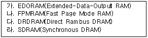
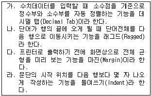
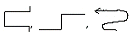
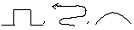
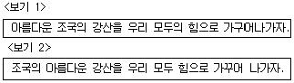
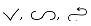
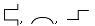
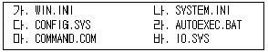
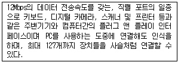
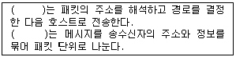

워드프로세서-(구-1급) (2003-03-16 기출문제)
1과목: 워드프로세싱 일반
1. 다음 중 저장 용량이 가장 작은 것에서부터 순서대로 나열한 것은?
- 플로피 디스크 → ZIP 디스크 → CD → DVD
- 플로피 디스크 → CD → ZIP 디스크 → DVD
- 플로피 디스크 → ZIP 디스크 → DVD → CD
- ZIP 디스크 → 플로피 디스크 → CD → DVD
(정답률: 74%)

2. 다음 보기의 DRAM을 개발된 순서에 따라 올바르게 나열한 것은?

- 가 → 나 → 다 → 라
- 나 → 가 → 라 → 다
- 라 → 다 → 나 → 가
- 다 → 가 → 라 → 나
(정답률: 66%)
3. 다음 중 복사(Copy)와 오려두기(Cut)에 대한 설명으로 옳지 않은 것은?
- 복사와 오려두기 모두 버퍼나 클립보드를 사용한다.
- 복사와 오려두기를 하면 지정된 영역은 변함이 없다.
- 지정된 영역의 내용을 복사와 오려두기 한 후 붙이기(Paste) 기능을 사용하여 다른 곳에 복사하거나 이동시킬 수 있다.
- 복사는 문서의 분량을 증가시키는 반면 이동은 일반적으로 문서의 분량이 증가되지 않는다.
(정답률: 70%)
4. 다음 중 메일머지(Mail Merge) 기능에 대한 설명으로 옳지 않은 것은?
- 이름이나 직책, 주소 등만 다르고 나머지 내용은 같은 여러 통의 편지를 쉽게 만들 수 있는 기능이다.
- 초청장이나 안내장, 청첩장 등을 만들 경우에 효과적으로 이용할 수 있다.
- 본문(내용문) 파일과 데이터 파일을 작성한다.
- 반드시, 데이터 파일에서 메일머지 기능을 실행시켜야 한다.
(정답률: 80%)
5. 다음은 워드프로세서에 사용되는 글꼴에 대한 설명이다. 아웃라인(Outline) 방식에 대한 설명으로 옳지 않는 것은?
- 구성을 점으로 설계하고 화면에 표시된 점의 수와 출력된 글자를 구성하는 점의 수가 같다.
- 글꼴을 확대해도 테두리가 거칠게 나타나지 않아 고해상도의 출력물을 얻을 수 있다.
- 외곽선 글꼴이라고도 한다.
- 트루타입 글꼴, 벡터 글꼴, 포스트스크립트 글꼴이 대표적이다.
(정답률: 65%)
6. 다음 중 행두 금칙문자로만 짝지어진 것은?
- $, ], ?, &"
- ), }, ℉, ?
- (, #, ℃, {
- >, }, ￥, ]
(정답률: 65%)
7. 다음 중 워드프로세서의 글자모양에 대한 설명으로 옳지 않은 것은?
- 글자 크기의 단위는 ‘포인트(Point)’이다.
- 자간이란 글자와 글자 사이의 간격을 말한다.
- 글자 속성이란 글자에 진하게, 글자색, 밑줄, 그림자 등을 지정한 것을 말한다.
- 장평이란 문단과 문단 사이의 간격을 말한다.
(정답률: 77%)
8. 다음 중 워드프로세서의 출력기능에 대한 설명으로 옳지 않은 것은?
- E-mail로 보내기 기능을 사용하면 인터넷 서비스를 통하여 공지사항 등을 보낼 수 있다.
- 미리보기 기능을 이용하면 편집한 내용이 인쇄 용지에 어떻게 인쇄될 것인지 확인할 수 있다.
- 팩스인쇄는 일반 팩시밀리가 없어도 작업한 문서를 상대방의 팩스로 보낼 수 있는 기능이다.
- 워드프로세서 작성이 가능한 모든 컴퓨터에서는 새로이 하드웨어를 추가하지 않아도 팩스인쇄가 가능하다.
(정답률: 55%)
9. 다음 중 인쇄 용지에 대한 설명으로 옳지 않은 것은?
- 연속 용지는 라인 프린터와 같은 충격식 프린터에서 주로 사용된다.
- 잉크젯 프린터나 레이저 프린터에서는 주로 낱장 용지가 사용된다.
- 낱장 용지의 표준 크기는 공문서 규격인 A4이다.
- 낱장 용지의 크기는 B0 > A1 > B1 > A2 > B2... 순이다.
(정답률: 75%)
10. 다음 중 유니코드(KS X 10⑤-1)에 대한 설명으로 옳은 것은?
- 영문과 공백은 1바이트, 한글과 한자는 2바이트로 처리한다.
- ‘必勝 KOREA'라는 말을 입력할 경우 최소 16바이트의 기억 공간이 필요하다.
- 정보 교환시 제어 문자와 충돌이 발생할 가능성이 크다.
- 조합형 한글 코드에 비해 적은 기억 공간을 사용한다.
(정답률: 81%)
11. 주로 영문을 입력할 때 사용하는 기능으로 행의 끝에서 단어가 잘릴 경우 해당 단어 자체를 다음 행으로 이동시키는 것을 무엇이라 하는가?
- 메일 머지(Mail Merge)
- 영문균등(Justification)
- 워드 랩(Word Wrap)
- 래그드(Ragged)
(정답률: 65%)
12. 다음은 워드프로세서 용어에 대한 설명이다. 옳지 않은 내용의 문항을 모두 나열한 것은?

- 가, 나
- 다, 라
- 나, 다, 라
- 가, 나, 다, 라
(정답률: 66%)
13. 문서는 어떤 수단을 이용하여 발신함을 기본 원칙으로 하는가?
- 인편
- 정보통신망
- 우편
- 모사전송
(정답률: 75%)
14. 전자문서의 효력 발생시기는?
- 출력후 등기로 수신자에게 도달
- 수신자의 컴퓨터파일에 기록
- 발신자의 발송
- 전자이미지 서명
(정답률: 71%)
15. 공문서에서 관인을 찍는 위치는?
- 기관 또는 직위 명칭의 첫 자가 인영의 가운데 오도록 찍는다.
- 기관 또는 직위 명칭의 끝자와 그 바로 앞글자의 가운데 오도록 인영을 찍는다.
- 기관 또는 직위 명칭의 끝자가 인영의 가운데 오도록 찍는다.
- 기관 또는 직위 명칭이 끝난 다음 위치에 인영을 찍는다.
(정답률: 53%)
16. 다음 중 전자출판에서 글꼴의 크기 단위는?
- 퍼센트(%)
- 밀리미터(mm)
- 픽셀(pixel)
- 포인트(point)
(정답률: 75%)
17. 전자출판(Electronic Publishing)에 관한 용어이다. 옳지 않은 것은?
- 디더링(Dithering) : 제한된 색상을 조합 또는 비율을 변화하여 새로운 색을 만드는 작업
- 리딩(Leading) : 자간의 미세 조정으로 특정 문자들의 간격을 조정
- 스프레드(Spread) : 대상체의 컬러가 배경색의 컬러보다 옅어서 대상체가 보이지 않는 현상
- 리터칭(Retouching) : 기존의 이미지를 다른 형태로 새롭게 변형시키는 작업
(정답률: 74%)
18. 다음 중 전자 출판(DTP)의 특징에 대한 설명으로 옳지 않은 것은?
- 출판 과정의 개인화 가능
- 위지윅(WYSIWYG)의 구현
- 문자, 소리, 그림, 영상, 애니메이션 등 다양한 표현이 가능
- 장비간 호환성을 위해 미리 정해진 글꼴(Font)만 사용 가능
(정답률: 68%)
19. 다음 중에서 문서의 분량이 증가될 수 있는 교정부호들로만 짝지어진 것은?


(정답률: 87%)
20. <보기1>의 문장이 <보기2>의 문장으로 수정되기 위해 필요한 교정부호들로만 올바르게 짝지어진 것은?



(정답률: 91%)
2과목: PC 운영 체제
21. 한글 Windows 98에서 특정 객체에 대한 등록정보를 표시하기 위한 바로가기 키로 가장 적절한 것은?
- [Ctrl] + Z
- [Ctrl] + [ESC]
- [Alt] + [Enter]
- [Alt] + [Space Bar]
(정답률: 67%)
22. 다음은 한글 Windows 98에 대한 특징을 설명한 것이다. 옳지 않은 것은?
- 비선점형 멀티태스킹(Non-Preemptive Multitasking)의 지원으로 특정한 응용 프로그램에서 문제가 발생하면 시스템 전체가 동작을 멈춘다.
- VFAT(Virtual File Allocation Table)을 지원하여 최대 255자까지의 파일 이름을 사용할 수 있다.
- PNP(Plug and Play) 기능을 지원하여 하드웨어 추가를 쉽게 할 수 있게 한다.
- 윈도는 32비트 운영체제로 한 번에 32비트 단위의 데이터를 처리한다.
(정답률: 65%)
23. 다음 보기의 파일들은 Windows 부팅 과정에서 사용되는 것들이다. 부팅 과정에서 각 파일이 사용되는 순서를 올바르게 나열한 것은?

- 바 - 라 - 마 - 다 - 가 - 나
- 바 - 다 - 라 - 마 - 가 - 나
- 바 - 라 - 마 - 다 - 나 - 가
- 바 - 다 - 마 - 라 - 가 - 나
(정답률: 32%)
24. 한글 Windows 98에서 [시작] 메뉴의 [찾기]를 선택하였다. [찾기] 메뉴에서 나타나는 하위 메뉴의 기능에 대한 설명으로 옳지 않는 것은?
- 파일 또는 폴더를 찾을 수 있다.
- 네트워크와 연결된 컴퓨터를 찾을 수 있다.
- 삭제된 파일 또는 폴더를 찾을 수 있다.
- 주소록에 저장된 사람을 찾을 수 있다.
(정답률: 68%)
25. 한글 Windows 98에서 작업 표시줄 내의 빠른 실행 도구 모음 중에서 바탕 화면 보기에 해당하는 아이콘은?
(정답률: 76%)
26. 다음 중에서 한글 Windows 98 [시작] 메뉴의 구성 요소가 아닌 것은?
- 문서
- 설정
- 실행
- 휴지통
(정답률: 76%)
27. 한글 Windows 98의 [제어판] - [내게 필요한 옵션]에서 할 수 있는 기능이 아닌 것은?
- 키보드의 숫자 키패드로 마우스 포인터를 제어할 수 있다.
- 왼손잡이를 위한 마우스를 설정할 수 있다.
- [Caps Lock], [Num Lock], [Scroll Lock]을 누를 때 신호음을 들을 수 있다.
- 빠르게 반복되는 키의 입력을 무시하고 키의 반복 속도를 느리게 지정할 수 있다.
(정답률: 50%)
28. 한글 Windows 98에서 바로 이전에 실행한 작업을 취소하기 위한 바로가기 키는?
- [Ctrl] + [Esc]
- [Alt] + [Esc]
- [Ctrl] + Z
- [Alt] + Z
(정답률: 72%)
29. 한글 Windows 98에서 [제어판] - [프로그램 추가/제거]의 등록정보 창에서 할 수 없는 기능은?
- 프로그램 설치/제거
- 프로그램 파일 백업
- Windows 구성요소 설치
- 시동 디스크 작성
(정답률: 41%)
30. 한글 Windows 98에서 [제어판]의 [글꼴]에 관한 설명으로 가장 옳지 않은 것은?
- 폰트 파일은 WINDOWS 폴더의 FONTS 폴더에 존재한다.
- 폰트 파일은 FON, TTF 등의 확장자를 갖는다.
- [제어판]의 [프로그램 추가/제거]를 이용해 새로운 폰트를 설치하여야 한다.
- 폰트 파일을 글꼴 폴더에 복사만 해도 설치가 된다.
(정답률: 56%)
31. 한글 Windows 98에서 [Shift] 키를 누른 상태에서 특정 파일을 [휴지통]으로 드래그하였을 경우의 결과는?
- 선택된 파일이 휴지통으로 이동된다.
- 선택된 파일이 완전히 삭제되어 복원할 수 없게 된다.
- 선택된 파일이 휴지통으로 복사된다.
- 휴지통 폴더도 삭제된다.
(정답률: 71%)
32. 한글 Windows 98에서 [Ctrl] 키를 누른 상태에서 임의의 파일을 다른 드라이브의 폴더로 드래그하는 경우의 결과는?
- 선택된 파일이 복사된다.
- 선택된 파일이 이동된다.
- 선택된 파일이 삭제된다.
- 바로가기 아이콘이 만들어진다.
(정답률: 70%)
33. 한글 Windows 98의 인쇄 기능에서 사용되는 스풀링의 특징에 대한 설명으로 옳은 것은?
- 스풀링은 CPU를 비롯한 시스템의 운영 효율을 상당 부분 저하시킨다.
- 스풀링은 윈도시스템에서 지원되는 기능으로 스풀 기능사용 여부를 설정할 수 있다.
- 스풀링된 인쇄 작업의 순서를 변경할 수 없다.
- 스풀링은 주기억장치를 활용하여 이루어진다.
(정답률: 47%)
34. 다음 중 한글 Windows 98의 [보조프로그램]의 [메모장]에서 할 수 있는 기능이 아닌 것은?
- 자동 줄바꿈
- 글자의 색상과 글꼴 지정
- 머리글, 바닥글 작성
- 출력용지 및 여백 설정
(정답률: 67%)
35. 다음 중 한글 Windows 98의 [메모장]에서 키보드에 없는 특수 문자를 넣고자 할 때 사용하는 프로그램은 무엇인가?
- 워드패드
- 문자표
- 계산기
- 문자편집기
(정답률: 68%)
36. 한글 Windows 98의 하드디스크 드라이브에서 FAT32를 사용할 경우 FAT16에 비해 디스크 공간을 절약할 수 있는 이유는?
- 논리 드라이브의 개수를 훨씬 많이 둘 수 있기 때문이다.
- 하드디스크 내에 주소 정보를 갖는 영역을 작게 할당하기 때문이다.
- 한 클러스터 크기를 작게 할 수 있기 때문이다.
- 하드디스크 상의 주소 표현에 작은 비트수를 사용하기 때문이다.
(정답률: 47%)
37. 한글 Windows 98에서 인터넷 환경을 설정한 뒤 인터넷이 잘 되지 않을 때 네트워크의 이상을 먼저 점검하게 된다. 네트워크 연결성을 점검하기 위해 주변 컴퓨터나 라우터와의 통신 상태를 점검하는데 많이 쓰이는 DOS 명령어는?
- TELNET
- PING
- FTP
- IPCONFIG
(정답률: 63%)
38. 한글 Windows 98에서 시스템 유지 보수에 관한 설명으로 옳지 않은 것은?
- 시동디스크를 만들려면 적어도 1.44MB 용량의 플로피 디스크 한 장이 필요하다.
- 시동디스크를 넣고 컴퓨터를 다시 시작하면 하드 드라이브가 아닌 시동디스크로 시스템을 시작할 수 있다.
- 드라이브 변환기는 드라이브를 FAT32 파일 시스템으로 변환한다.
- 디스크 검사를 사용하면 각종 바이러스를 치료할 수 있다.
(정답률: 42%)
39. 한글 Windows 98에서 인터넷을 사용하기 위하여, LAN 케이블을 이용하여 수동으로 IP를 설정하는 경우에 반드시 설정해야 하는 TCP/IP 등록정보가 아닌 것은?
- WINS 구성
- DNS 구성
- 게이트웨이
- IP 주소
(정답률: 58%)
40. 한글 Windows 98에서 네트워크를 통하여 공유된 드라이브나 폴더를 사용하는 방법으로 옳지 않은 것은?
- 바탕화면의 [네트워크 환경]을 이용한 사용
- Windows 탐색기를 이용한 사용
- 네트워크 드라이브의 연결을 이용한 사용
- [제어판]에서 [네트워크]를 이용한 사용
(정답률: 41%)
3과목: 컴퓨터 및 정보활용
41. 다음은 디지털 컴퓨터와 아날로그 컴퓨터를 비교 설명한 것이다. 옳지 않은 것은 무엇인가?
- 디지털 컴퓨터는 프로그램 보관이 용이하지만 아날로그 컴퓨터는 어렵다.
- 디지털 컴퓨터는 범용이지만 아날로그 컴퓨터는 일반적으로 특수목적용이다.
- 디지털 컴퓨터는 논리회로를 사용하지만 아날로그 컴퓨터는 증폭회로를 사용한다.
- 디지털 컴퓨터의 연산속도가 아날로그 컴퓨터의 연산속도보다 빠르다.
(정답률: 47%)
42. 다음 중 폰노이만이 제시한 프로그램 내장 개념(stored program concept)에 대한 설명으로 옳지 않은 것은?
- 모든 데이터와 명령들은 실행되기에 앞서 주기억장치에 저장되어야 한다.
- 주기억장치에 저장된 내용은 데이터의 형식과는 관계없이 주소를 이용해서 접근 또는 참조된다.
- 명령어 처리는 프로그램 계수기의 지시에 따라 한번에 하나씩 순차적으로 이루어진다.
- 각 기계어 명령의 실행 단계마다 사용자의 개입을 필요로 한다.
(정답률: 52%)
43. 다음 중 컴퓨터 시스템에서 명령을 실행하는 단계를 순서대로 올바르게 나열한 것은?
- 명령어 인출 - 명령어 실행 - 명령어 해독
- 명령어 해독 - 명령어 인출 - 명령어 실행
- 명령어 인출 - 명령어 해독 - 명령어 실행
- 명령어 실행 - 명령어 해독 - 명령어 인출
(정답률: 64%)
44. 다음은 무엇에 대한 설명인가?

- PCI
- USB
- SCSI
- EISA
(정답률: 87%)
45. 다음 중 CPU의 처리시간을 일정한 시간(time quantum)으로 나누어서 여러 개의 작업을 연속적으로 처리하는 기법을 무엇이라고 하는가?
- 일괄 처리
- 시분할 처리
- 실시간 처리
- 분산 처리
(정답률: 66%)
46. 다음 중 가상기억장치에 대한 설명으로 옳지 않은 것은?
- 주기억장치와 보조기억장치로 구성된 기억체제로 주기억장치의 용량이 부족한 점을 보완하기 위해 사용한다.
- 프로그램이 사용할 수 있는 주소공간의 크기가 실제 주기억장치 기억공간의 크기보다 작을 때 사용한다.
- 가상기억장치의 구현에 페이지나 세그먼트 개념이 사용된다.
- 가상기억장치는 멀티프로그래밍을 가능하게 한다.
(정답률: 49%)
47. 다음 중 언어번역기에 의해 생성된 목적 프로그램을 실행 가능한 형태로 주기억장치에 올려주는 소프트웨어는 무엇인가?
- 링커(Linker)
- 인터프리터(Interpreter)
- 로더(Loader)
- 코프로세서(Coprocessor)
(정답률: 50%)
48. 다음 중 사용기간 및 기능 제한 없이 무료로 사용할 수 있는 공개용 프로그램으로 저작권자의 동의 없이 자유롭게 복사, 배포할 수 있는 소프트웨어는?
- 프리웨어(Freeware)
- 베타버전(Beta Version)
- 쉐어웨어(Shareware)
- 데모버전(Demo Version)
(정답률: 70%)
49. 다음 중 한글 Windows 98에서 응용 프로그램을 실행하다 디스크 공간 부족이라는 메시지가 나왔을 경우 해결하는 방법으로 옳지 않은 것은?
- [디스크 검사]를 실행한다.
- [휴지통]에 있는 파일을 삭제한다.
- [디스크 공간 늘림]을 실행하여 데이터 압축으로 공간을 확보한다.
- [디스크 정리]를 통해서 자동으로 다운로드한 ActiveX 컨트롤, Java 애플릿을 삭제한다.
(정답률: 53%)
50. 다음 중 컴퓨터 바이러스가 가져올 수 있는 결과로 옳지 않은 것은?
- 컴퓨터가 작동 중에 이유 없이 갑자기 느려지고, 프로그램 실행 도중 에러가 자주 발생한다.
- 갑자기 시스템 전원 공급이 중단되어 동작하지 않는다.
- 작업 중에 이전에 저장했던 파일이 갑자기 없어지거나, 실행 프로그램의 날짜나 크기 등이 변경되어진다.
- 하드디스크에 들어있는 데이터가 파괴된다.
(정답률: 65%)
51. 다음 중 멀티미디어 파일 형식에 대한 설명으로 옳지 않은 것은?
- AVI : 마이크로 소프트웨어사가 개발한 동화상을 위한 파일 형식
- MOV : 매킨토시 컴퓨터에서 사용되는 동화상을 위한 파일 형식
- JPG : 국제 표준화 기구에서 제정한 동화상의 압축기술로서 인터넷에서 많이 사용하는 형식
- GIF : 화상 압축의 규격으로 256색상에 적합한 형식
(정답률: 59%)
52. 다음은 인터넷에서 메시지를 전송하는 데 사용되는 프로토콜과 그 역할에 대한 설명이다. ( )안에 들어갈 용어를 순서대로 올바르게 나열한 것은?

- TCP, IP
- IP, HTTP
- IP, TCP
- TCP, HTTP
(정답률: 55%)
53. 다음 중 하이퍼텍스트(Hypertext)에 대한 설명으로 옳지 않은 것은?
- 하이퍼텍스트는 사용자의 선택에 따라 관련 있는 쪽으로 옮겨갈 수 있도록 조직화된 정보를 말한다.
- 월드와이드웹의 발명을 이끈 주요 개념이 되었다.
- 여러 명의 사용자가 서로 다른 경로를 통해 접근할 수 있다.
- 하이퍼텍스트는 선형 구조를 가진다.
(정답률: 65%)
54. 다음 중 비트맵 이미지에 관한 설명으로 옳지 않은 것은?
- 픽셀을 이용하여 이미지를 나타낸다.
- 이미지 크기를 확대해도 화질에 손상이 가지 않는다.
- 부드러운 톤(continuous tone)의 이미지를 나타낼 때 많이 사용된다.
- 이미지의 해상도는 이미지를 만들 때 정해진다.
(정답률: 67%)
55. 다음 중 3차원 컴퓨터 그래픽에서 화면에 표시되는 3차원 물체의 각 면에 색깔이나 음영 효과를 넣어 화상의 입체감과 사실감을 나타내는 방법은?
- 렌더링(Rendering)
- 디더링(Dithering)
- 인터레이싱(Interacing)
- 메조틴트(Mezzotint)
(정답률: 58%)
56. 다음 중 프로토콜에 대한 설명으로 옳지 않은 것은?
- 프로토콜이란 통신을 원하는 두 개체간에 무엇을, 어떻게, 언제 통신할 것인가에 대해 서로 약속한 운영 규정이다.
- 프로토콜의 기본 요소는 구문(Syntax), 의미(Semantics), 순서(Timing)이다.
- 프로토콜은 전송하고자 하는 데이터 프레임의 구성에 따라 문자 방식, 바이트 방식, 비트 방식 등이 있다.
- 프로토콜의 구성은 회사마다 다양하게 사용할 수 있도록 한다.
(정답률: 60%)
57. 다음 중 인터넷 사용자가 인터넷에 처음 접속할 때 방문하게 되는 웹 페이지를 지칭하는 용어로, 전자 우편, 홈페이지, 채팅, 게시판, 쇼핑 등의 서비스를 통합하여 제공하는 것을 의미하는 용어는 어느 것인가?
- 아키(Archie)
- 포털 사이트(Portal Site)
- 미러 사이트(Mirror Site)
- 고퍼(Gopher)
(정답률: 82%)
58. 다음 중 원격지의 메일 서버가 사용자를 위해 모아둔 전자 우편을 각 클라이언트(사용자)가 수신하는 데 사용하는 프로토콜로 전자 우편을 받는 데만 사용되는 프로토콜은?
- SMTP
- POP3
- SNMP
- FTP
(정답률: 57%)
59. 많은 수의 호스트에 패킷을 범람시킬 수 있는 공격용 프로그램을 분산 설치해서 이를 통합된 형태로 표적 시스템에 대해 일제히 데이터 패킷을 범람시켜 표적 시스템의 성능을 저하시키거나 시스템을 마비시키는 공격 방법을 무엇이라고 하는가?
- 버퍼 오버플로우 공격(buffer overflow attack)
- 분산 서비스 거부 공격(distributed denial of service)
- 스팸 공격(spam attack)
- 트로이 목마 공격(trojan horse attack)
(정답률: 46%)
60. 다음 중 방화벽의 이점으로 가장 거리가 먼 것은?
- 데이터 손상을 목적으로 내부 호스트에 업로드된 파일로부터 내부 컴퓨터들에 대한 공격을 막을 수 있다.
- 외부의 침입 시도가 있을 시 네트워크 관리자에게 통보하는 기능을 가지고 있다.
- 외부로부터의 허가되지 않은 사용자의 접근을 제한할 수 있다.
- 중앙 집중적인 보안 기능을 제공할 수 있다.
(정답률: 52%)
플로피 디스크는 1.44MB, ZIP 디스크는 100MB ~ 750MB, CD는 700MB, DVD는 4.7GB ~ 17GB의 저장 용량을 가지고 있습니다. 따라서 저장 용량이 가장 작은 것부터 순서대로 나열하면 플로피 디스크 → ZIP 디스크 → CD → DVD가 됩니다.